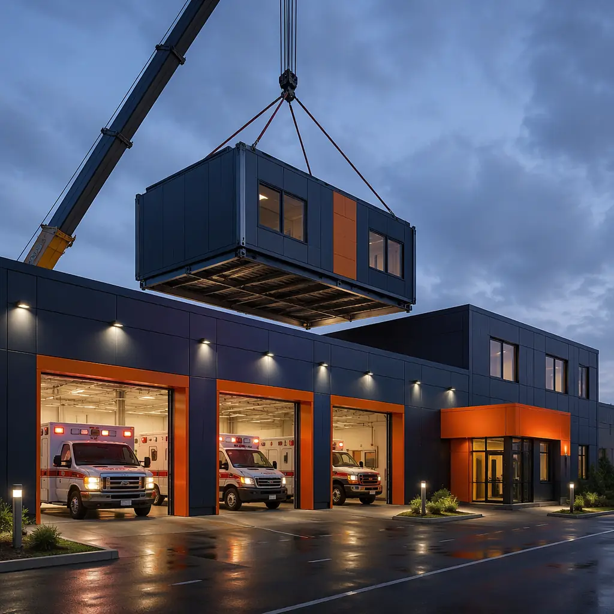
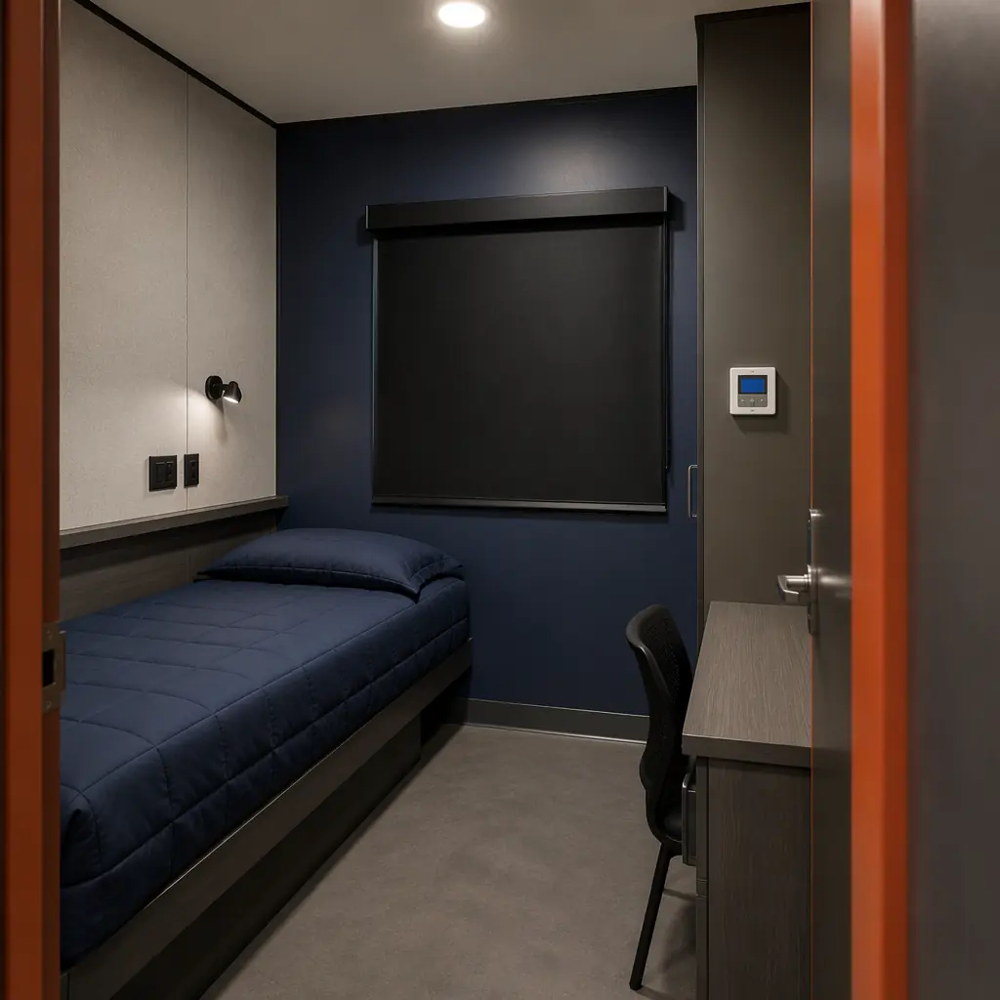

The United States operates approximately 15,000 ambulance and EMS stations serving 330 million people across urban, suburban, and rural coverage areas, with response time standards — typically 8 minutes 59 seconds or less for 90% of emergency calls in urban areas — that depend directly on station location and facility readiness. According to the National Association of Emergency Medical Technicians, over 25% of existing EMS stations were constructed before 1990 and lack drive-through apparatus bays (requiring ambulances to back into bays, adding 15–30 seconds to every response), climate-controlled medication storage meeting USP 797/800 standards, and decontamination areas physically separated from crew living quarters — deficiencies that impact both patient outcomes and provider safety. A traditional ground-up EMS station takes 16–24 months from funding approval to occupancy, with every month of construction representing a period during which emergency medical response operates from compromised facilities. Modular prefabricated construction compresses the delivery timeline to 8–12 months by manufacturing 75–85% of the building — including drive-through apparatus bays with pre-installed vehicle exhaust extraction, factory-fitted crew quarters with independent HVAC zoning for day and night shift personnel, and climate-controlled medical supply rooms — under factory quality control while site work proceeds concurrently. For a municipality funding a $4.2 million EMS station through a 15-year municipal bond, compressing the construction period by 10 months saves approximately $148,000 in interim interest costs while delivering emergency response capability 10 months earlier. Our experience with modular fire station construction demonstrates the same rapid-deployment advantages for emergency services facilities with apparatus bay requirements.

Why EMS Stations Demand Specialized Construction — The Three Systems That Define Operational Readiness
An EMS station is not simply a garage with sleeping quarters — it is a facility that must support three distinct operational systems, each with construction specifications that conventional general contractors routinely underestimate. The consequences of getting these systems wrong range from delayed emergency response (ambulances spend 15–30 seconds longer backing out of forward-only bays than driving through) to medication efficacy compromise (insulin stored at 3°C above USP-recommended range loses potency 15% faster) to crew health impacts (diesel exhaust particulate concentrations in living quarters exceeding 5 μg/m³ correlate with 23% higher respiratory illness rates among EMS personnel according to NIOSH studies).
- Drive-through apparatus bays with source-capture exhaust: Modern EMS best practice calls for drive-through ambulance bays — the vehicle enters through one door and exits through the opposite door, eliminating the backing maneuver that accounts for approximately 25% of ambulance collision incidents according to NHTSA data. The bay must provide 14-foot minimum ceiling clearance (Type I and Type III ambulances are 9–10 feet tall, requiring clearance for roof-mounted equipment and antennae), a 60-foot bay depth to accommodate the 22–28-foot ambulance plus circulation space at both ends, and a source-capture vehicle exhaust system — a hose that connects directly to the ambulance tailpipe and vents exhaust outside the building through a dedicated duct system. Modular construction builds the apparatus bay as a clear-span steel module with the overhead door assemblies factory-installed, the exhaust extraction ductwork pre-routed through the roof structure, and the bay floor sloped 0.5% toward trench drains for vehicle washdown water management. This factory approach eliminates the 4–6 weeks of field coordination between door installers, exhaust system contractors, and concrete finishers that makes conventional EMS bay construction unpredictable;
- Medication and supply storage with USP 797/800 compliance: EMS stations stock 40–60 different medications — ranging from room-temperature-stable items like naloxone and epinephrine to temperature-sensitive biologics requiring refrigerated storage at 2–8°C with continuous temperature monitoring. USP Chapter 797 (sterile compounding) and Chapter 800 (hazardous drug handling) establish storage requirements that apply even to non-compounding facilities when they store medications for administration. The medication room must maintain 68–72°F with humidity below 60% RH, include a pharmaceutical-grade refrigerator with 24/7 temperature monitoring and alarm notification, and provide a separate area for controlled substance storage (Schedule II-V medications including morphine, fentanyl, and ketamine) in a DEA-compliant double-locked cabinet bolted to structural framing. Modular construction delivers the medication room as a dedicated module with independent HVAC zone, factory-wired temperature monitoring system, pre-installed refrigerator outlet on emergency power circuit, and structural blocking for the controlled substance cabinet anchor points — all verified under factory quality control before site delivery;
- Crew quarters designed for 24/7 shift operations: EMS personnel work 12- or 24-hour shifts, requiring sleeping quarters that support daytime sleep in a facility that operates around the clock. Each sleeping room requires blackout window coverings, independent HVAC zoning (night-shift personnel sleeping during 95°F summer afternoons need different temperature than day-shift personnel in adjacent rooms), acoustic isolation from apparatus bay noise (STC 50 minimum wall assembly between sleeping quarters and bay area), and individual environmental controls for light, temperature, and ventilation. Modular construction delivers crew quarters as completed modules with factory-installed acoustic wall assemblies, independent ducted HVAC zones per room, and pre-wired individual environmental control panels — addressing the "sleep hygiene" challenge that NIOSH research identifies as the single most important facility factor affecting EMS provider alertness and patient care quality.
In conventional construction, these three systems are built by separate subcontractors — garage door installers, HVAC contractors, medical gas plumbers, security system integrators, and low-voltage electricians for temperature monitoring — creating a 6–10 week coordination period that dominates the critical path of EMS station construction. Modular construction eliminates this sequential coordination by building each system into the module at the factory, where a single integrated team installs all systems before the module leaves the production line. See our analysis of modular fire station construction for how the same factory-integrated approach serves the parallel emergency services facility type, and our analysis of modular factory QC systems for how controlled-environment quality assurance delivers specification compliance that field-built emergency facilities cannot reliably achieve.
![Photorealistic 3D cross-section render of modular EMS station apparatus bay wall assembly, clear-span steel truss roof structure with pre-installed vehicle exhaust extraction ductwork, overhead door assembly with factory-installed opener mechanism and emergency release, bay floor with 0.5% slope toward trench drain, separated crew quarters wall assembly with STC 50 acoustic isolation batt insulation between sleeping room and bay, dark navy structural steel with warm steel orange accent on door frames](../generated/ambulance-diagram.webp)
Decontamination and Infection Control — The Facility Feature That Post-COVID EMS Standards Now Require
The COVID-19 pandemic transformed EMS station design standards, elevating decontamination from an optional design consideration to a mandatory facility requirement in updated NFPA 1910 and CAAS (Commission on Accreditation of Ambulance Services) standards. Modern EMS stations must include a dedicated decontamination zone — physically separated from both the apparatus bay and the crew living quarters — where ambulance crews can remove contaminated PPE, shower, and don clean uniforms before entering crew areas. This "hot zone / warm zone / cold zone" progression mirrors the design philosophy of hospital isolation units, adapted for the pre-hospital environment.
Conventional construction struggles with decontamination zone implementation because the three-zone progression requires sealed wall penetrations, independent HVAC with negative pressure in the hot zone relative to adjacent spaces, and seamless antimicrobial surfaces that resist the repeated application of EPA-registered hospital disinfectants — all coordination-intensive installations that span multiple subcontractor scopes. Modular construction builds the decontamination suite as a self-contained module: the hot zone (PPE removal) with hands-free door operation, negative-pressure ventilation, and seamless wall surfaces; the warm zone (shower and hand hygiene) with a walk-through shower that physically separates contaminated and clean sides; and the cold zone (clean uniform storage) at positive pressure relative to the warm zone. The complete suite is factory-tested for pressure differential, air change rate, and surface decontamination compatibility before delivery. Our modular hospital construction guide documents how the same infection-control approach is applied in clinical environments, with the same factory-verified performance standards.
![Factory floor of modular prefabricated construction facility, partially completed EMS station crew quarters module with individual sleeping rooms, factory-installed acoustic wall assemblies with STC 50 mineral wool insulation between rooms, independent HVAC zone units with ductwork above each room, pre-wired environmental control panels at each bed position, blackout window coverings installed, dark navy wall panels with warm steel orange accent on door frames and trim, workers performing final quality inspection](../generated/ambulance-factory.webp)
Cost Structure — Modular EMS Station Economics vs. Traditional Construction
| Cost Category | Traditional (8,000 sq ft) | Modular (8,000 sq ft) |
|---|---|---|
| Base building shell & apparatus bay | $1.5–1.9M | $1.3–1.6M |
| Vehicle exhaust extraction system | $180–250K (field-installed) | $110–155K (factory pre-routed) |
| Crew quarters & sleeping rooms (6 rooms) | $420–550K | $310–390K |
| Decontamination suite & infection control | $240–340K | $160–220K |
| Medication & supply storage (USP compliant) | $120–175K | $85–120K |
| On-site general conditions | 16–24 months × $22K/month = $352–528K | 8–12 months × $22K/month = $176–264K |
| Total Project Cost Range | $2.8–3.7M | $2.1–2.8M |
Cost savings of $700K–900K (24–25%) are driven by factory labor productivity for systems integration (the vehicle exhaust extraction, medication storage HVAC, and decontamination suite plumbing that require 4–5 separate subcontractors in conventional construction are installed by a single factory team), reduced on-site general conditions (8–12 months of savings at $22K/month), and eliminated subcontractor mobilization costs. For agencies evaluating the broader emergency services infrastructure program, see our modular fire station construction guide for a parallel facility type with the same apparatus bay and crew quarter requirements. For procurement strategy guidance, our modular construction RFP and procurement guide covers competitive bidding processes compatible with public ambulance authority and municipal fire/EMS department procurement requirements.
![Construction site of modular EMS ambulance station, crane lifting completed drive-through apparatus bay module with pre-installed overhead doors and vehicle exhaust extraction ductwork visible, flatbed trucks delivering crew quarters modules, already-set modules with module seams visible forming station footprint, concrete approach apron completed, dark navy structural steel with warm steel orange accents on bay door frames, emergency response vehicles visible at adjacent temporary station location](../generated/ambulance-site.webp)
Procurement and Standards Compliance — How Modular Meets EMS Facility Requirements
EMS station construction must satisfy standards spanning building codes (IBC), healthcare facility guidelines (FGI Guidelines for Design and Construction of Outpatient Facilities for the medication storage area), NFPA standards (NFPA 1910 for ambulance apparatus bays, NFPA 101 for life safety in occupancies with sleeping accommodations), and Commission on Accreditation of Ambulance Services (CAAS) facility standards. Modular construction addresses each through the same factory quality system that serves our modular hospital construction and modular medical clinic programs:
- NFPA 1910 apparatus bay requirements: Drive-through bay configuration with 14-foot minimum ceiling clearance, source-capture vehicle exhaust system with automatic activation upon bay door opening, emergency generator connection for bay door operation during power failure, and CO/NO₂ monitoring with automatic exhaust fan activation at 35 ppm CO — all factory-installed and tested before module delivery;
- NFPA 101 sleeping accommodations: Crew sleeping rooms with direct exit access to the exterior or a protected exit passageway, smoke detection with in-room audible alarms, and fire separation from apparatus bay (1-hour fire-rated assembly because the bay contains vehicles with fuel loads) — all built into the module structural design and verified under factory inspection;
- CAAS facility standards: Secured medication storage with temperature monitoring and access control, decontamination area with separate ventilation from crew quarters, and adequate crew rest facilities with individual sleeping accommodations — all integrated into the factory module design rather than retrofitted during field construction.
Emergency medical services agencies in 18 countries have deployed MODURA modular facilities for applications ranging from rural ambulance posts (2,000 sq ft, 2 drive-through bays, 4 crew sleeping rooms) to regional EMS headquarters (15,000 sq ft, 8 drive-through bays, 16 crew sleeping rooms, training classroom, vehicle maintenance bay). Each facility is factory-built to ISO 9001 quality standards, with apparatus bay exhaust extraction, medication storage climate control, decontamination suite ventilation, and crew quarter acoustic isolation integrated during module fabrication. The result is an EMS station that enters service 8–12 months faster than conventional construction and costs 24–25% less over the total project lifecycle — delivering the emergency response capability that communities depend on and the operational readiness that EMS professionals deserve. See our modular building lifecycle cost analysis for long-term ownership economics of factory-built emergency services facilities.
